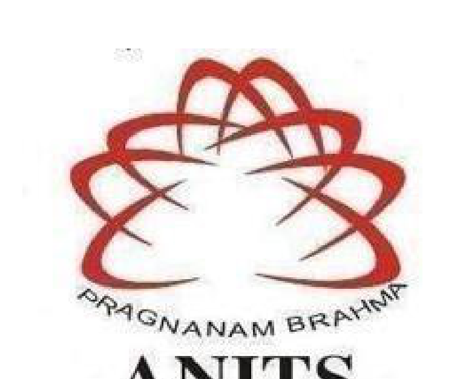
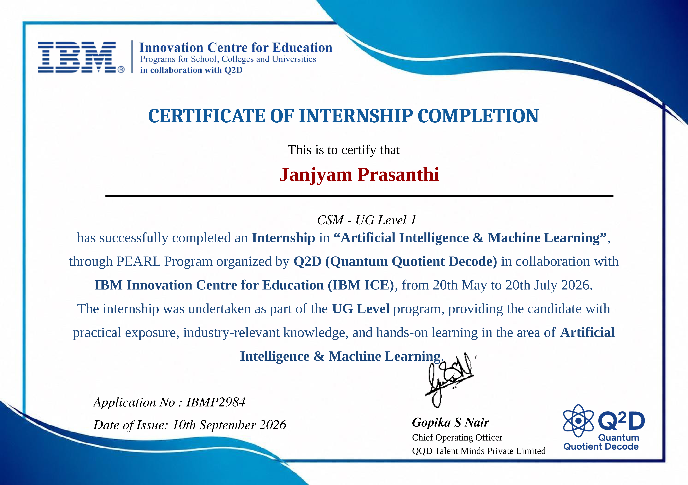

Print / Save to PDF
Artificial Intelligence & Machine Learning
Report submitted as part of the internship program requirement for the degree of
BACHELOR OF TECHNOLOGY IN COMPUTER SCIENCE ENGINEERING (AI & ML)
Submitted by: JANJYAM PRASANTHI (IBMP2984)

APPENDIX C: CERTIFICATE OF COMPLETION
